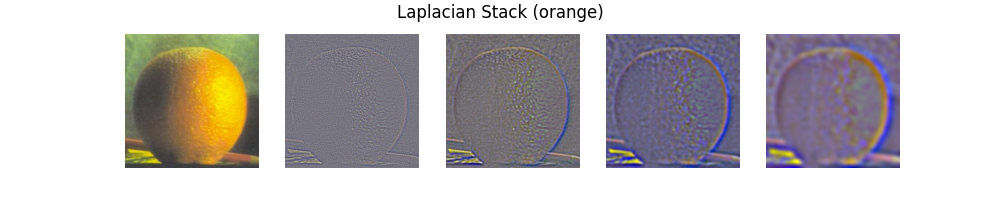
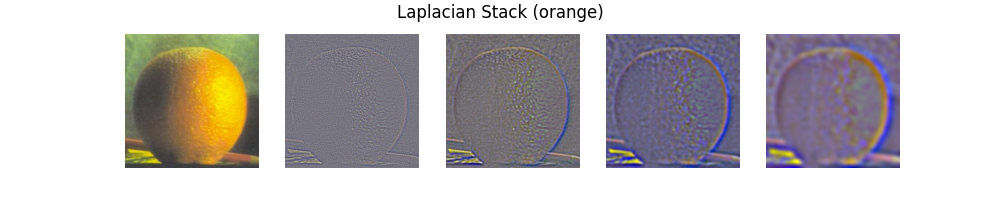

Edge Extraction
Fun with Filters! Edge extraction with 2D Gaussian filters and finite difference operators.
(Part 1: Fun with Filters)
An intuitive way to understand the "edges" in images is sudden changes in the values between adjacent pixels. Mathematically, such changes are reflected in the gradient of the pixel values. Let $I \in \mathcal{R}^{m \times n}$ denote a grayscale image. The gradient is defined as
$$\nabla I = \begin{bmatrix}\frac{\partial I}{\partial x} & \frac{\partial I}{\partial y}\end{bmatrix}$$
Since the pixel coordinates are discrete, we use differencing instead.
$$\begin{align} \frac{\partial I(x, y)}{\partial x} &\approx I(x + 1, y) - I(x, y) \\ \frac{\partial I(x, y)}{\partial y} &\approx I(x, y + 1) - I(x, y) \end{align}$$
which is equivalent to the following convolutions
$$\begin{align} \frac{\partial I}{\partial x} &\approx I * D_x\\ \frac{\partial I}{\partial y} &\approx I * D_y \end{align}$$
where $D_x = \begin{bmatrix}1 & -1\end{bmatrix}$, $D_y = \begin{bmatrix}1 & -1\end{bmatrix}^T$.
Finally, by taking the magnitude of the gradient at each pixel $$\Vert \nabla I(x, y) \Vert_2 = \sqrt{\left(\frac{\partial I(x, y)}{\partial x}\right)^2 + \left(\frac{\partial I(x, y)}{\partial y}\right)^2} $$ and applying an appropriate threshold to the values, we would get an image with binary edges.
Let's test out our simple edge extractor on the grayscale image "cameraman".
_(cameraman).png)
Note the threshold for the gradient magnitude is set to 0.2941 on the floating-point image.
One problem with the approach is the impact of noise on the image, which the finite difference operator is very sensitive with. Since noise is usually in high frequency, we can mitigate the problem by applying a Gaussian filter before taking the gradient.
_(cameraman).png)
Compared to the naive implementation above, the edges are much more prominent visually, even though the threshold is set to be much lower (0.0392 as compared to 0.2941). Also, there are less noise in the background.
We can simplify the procedure above to doing just a single convolution with the image. Here we utilize the derivative theorem of convolution $$\frac{\partial}{\partial x} (h * f) = (\frac{\partial}{\partial x} h) * f$$ and create the derivative of the Gaussian filter first, and then use the resulting filter to perform the convolution.
_(cameraman).png) From this example, we can validate that the two approaches leads to the same result.
From this example, we can validate that the two approaches leads to the same result.
(Part 2.1: Image "Sharpening")
An image can be sharpened by enhancing the details, which are usually higher in frequency. One algorithm to achieve this is to apply a high pass filter on the image, and then add the extracted high-frequency information back to the image. $$I_{\textrm{sharpened}} = (1 + \alpha) I - \alpha (G * I)$$ where $G$ is an Gaussian filter.
With appropriate $\alpha$, the details of the images, such as the fine textures of the building in the Taj Mahal photo, becomes more visible.
However, if the sharpening is done too aggressively, the image becomes excessively noisy, and the edges become overly dense, making the photo less natural. Also, in the Terrace Lake example, applying aggressive sharpening also causes the color to shift towards higher frequency components. One should exercise moderation when applying this technique to enhance their photos.
.png)
(Part 2.2: Hybrid Images)
By mixing the low frequency information of one image with the high frequency of another image, we can create "hybrid images" that appears different when viewed up close and from afar. $$H=I_1 * G_1 + I_2 * (1 - G_2)$$
| Derek | Nutmeg | Derek-Nutmeg |
|---|---|---|

|

|
|
| Pizza | Clock | Pizza Clock |
|
|
|
|
| Penguin | Bold Eagle | Penguin-Eagle |
|
|
|
|
Let's take a closer look at the intermediate products of the algorithm.
After the low pass filter, the majority of high frequency components, except of those parallel to the principle axes, have been eliminated.
Note that after applying the high pass filter, the values of some pixels might become negative. The high pass filtered image above has been linearly rescaled to $(0, 1)$ to be displayed normally. After the filter, the high frequency components of the image remains largely the same, while the low frequency components are greatly muted.
The Fourier Transform of the hybrid image is as follows.
To achieve desirable result, the image chosen to be high-pass filtered must have sufficient high frequency components, and the low-pass filtered one must have enough low frequency components. Otherwise, there might not be sufficient information left in the hybrid image.
If we swap the role of the pizza and the clock in the example above, we would get the following result.
To further enhance the result, let's compare the what happens if one or both of the images are set to grayscale.
| Both colored | High colored | Low colored | Both grayscale |
|---|---|---|---|

|
|

|

|
Through visual inspection, if the shape of the two images are similar, using the color from both images seems to lead to the best result. One possible explanation is that frequencies across different channels don't have a significant impact on each other, and more information is retained in the hybrid image, leading to better result visually.
However, if the shapes are significantly different (e.g. in the penguin-eagle example), using the color only from the high frequency image seems to lead to better result. This is possibly because removing the color from the low frequency image enhances the contrast of the high frequency components, making it more clearly discernible.
(Part 2.3: Gaussian and Laplacian Stacks)
As has been demonstrated in the image sharpening section, Gaussian filter works like a low-pass filter. Therefore, by recursively applying an Gaussian filter that is doubled in size and sigma on each level, we can create a "stack" of images that contains less and less high frequency components.
Also, by subtracting the low frequency components from the original image, we get the high frequency components. By taking the difference between two levels in the Gaussian stack, we can get a new stack of images that only contains frequencies in a specific band. This allows us to analyze the components of the image, and also paved way for fun techniques such as image blending!


 

 We can also attempt to recreate the figure in the 1983 paper
with the stacks we created.
We can also attempt to recreate the figure in the 1983 paper
with the stacks we created.
(Part 2.4: Multiresolution blending)
To naturally blend two images together, the transition window must be greater than the size of the most prominent feature and smaller than twice the size of the smallest prominent feature. This condition is naturally satisfied on each level of the Laplacian stack, which only contains frequencies within a specific band.
Here we follow the algorithm proposed in Burt and Adelson's paper:
| "Oraple" | Eiffel Tower: Day and Night |
Circuit House |
|---|---|---|

|
|
|
Let's take a closer look at how these images are created.
Fun with Filters! Edge extraction with 2D Gaussian filters and finite difference operators.

Image sharpening via high frequency enhancing.

Creating images that looks different when viewed up close and from afar!
Separate the high and low frequency components of an image with stacks.
Mix the Laplacian stacks of two images to smoothly blend two images together!
HTML template: Editorial by HTML5UP